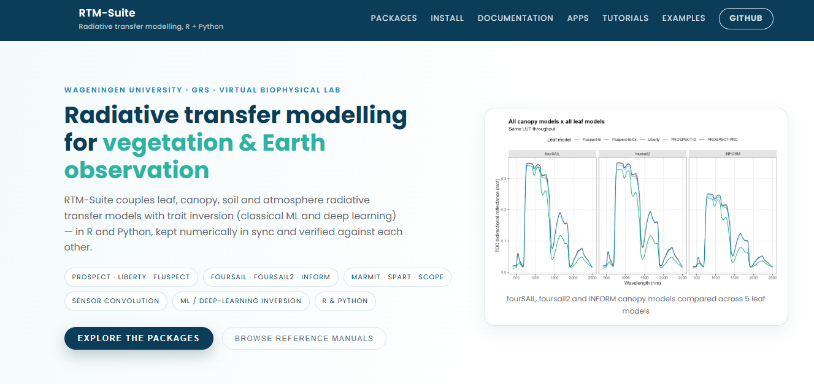
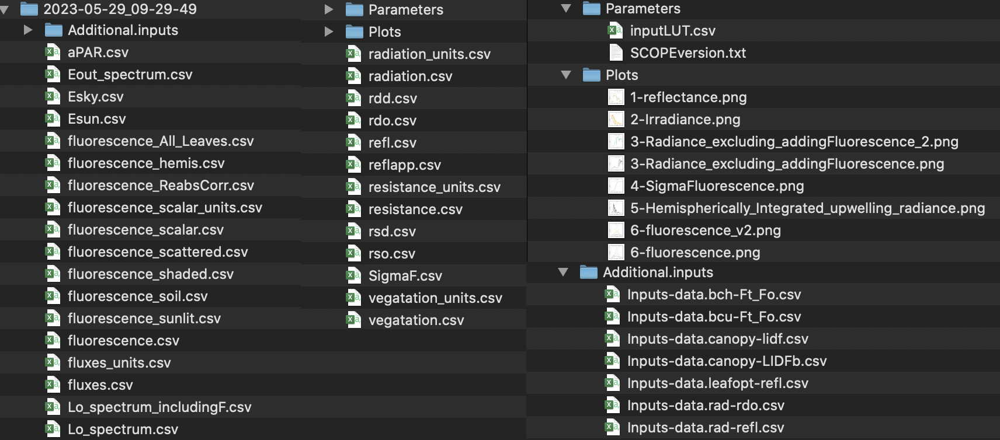
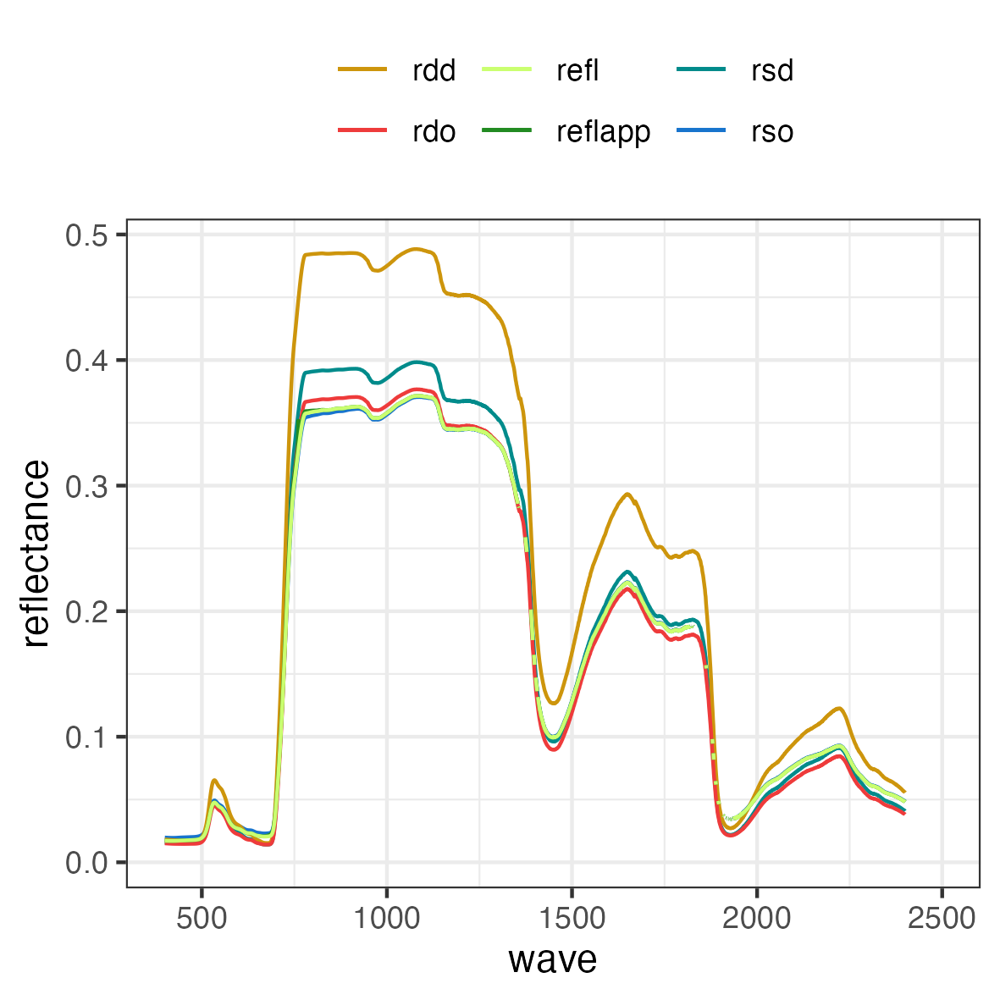
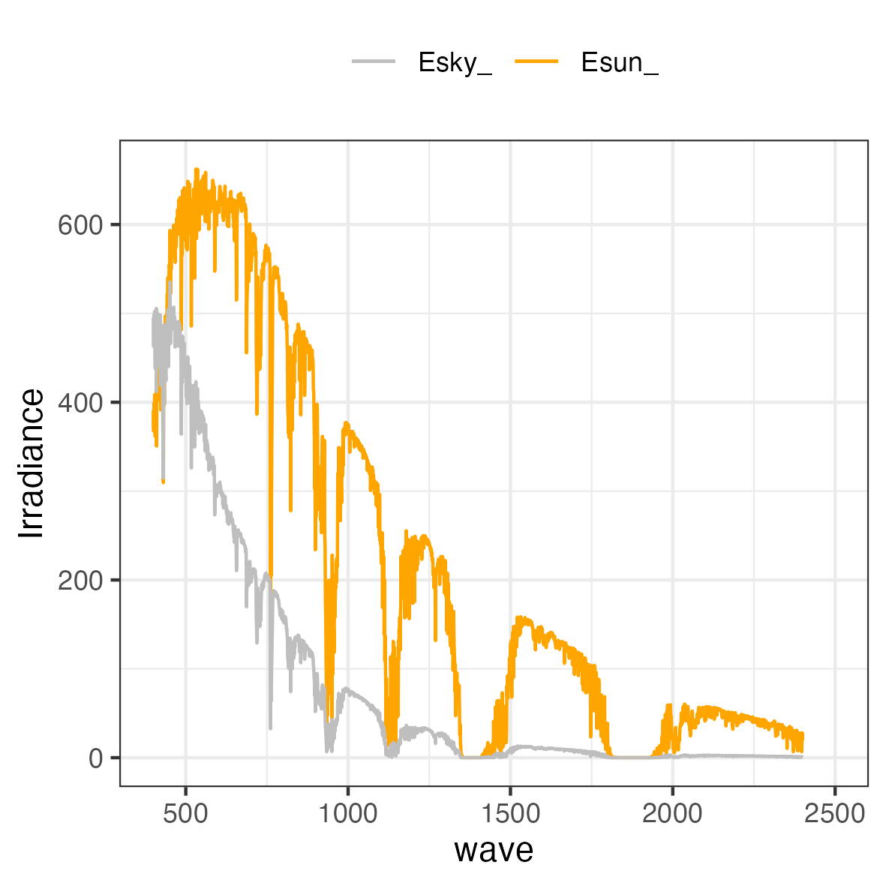
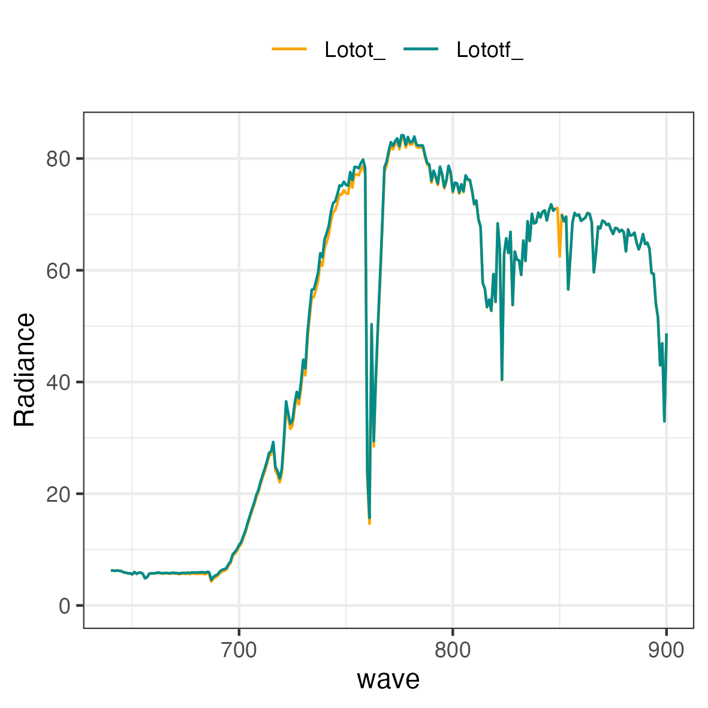
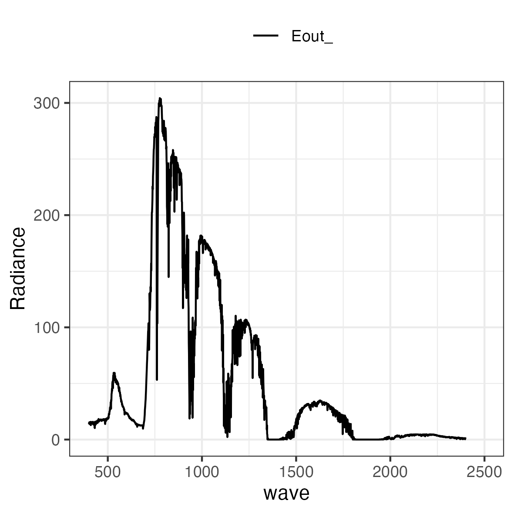
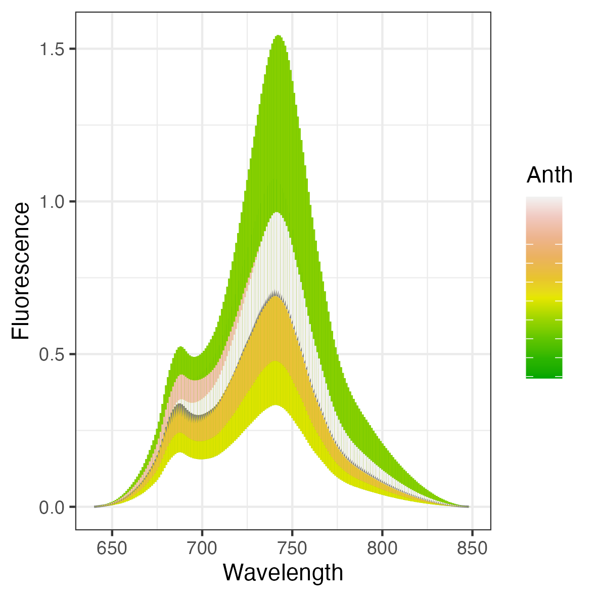
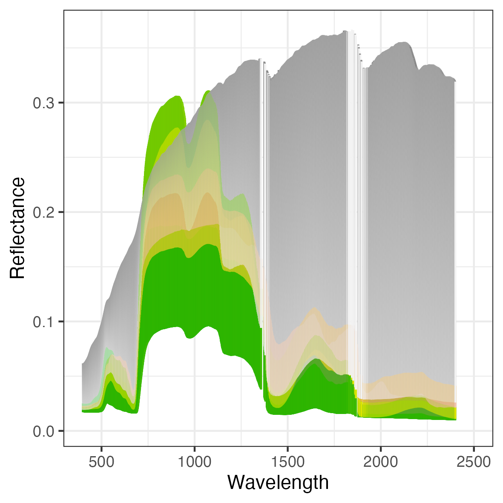

SCOPEinR
SCOPEinR is an R package designed for implementing the Soil Canopy Observation, Photochemistry, and Energy Fluxes (SCOPE) radiative transfer model. Originally developed in MATLAB, this model allows users to simulate interactions between soil, canopy, and atmospheric processes (Van der Tol et al., 2009; Yang et al., 2020).
SCOPEinR also powers Apps/RTMs, a point-and-click Shiny app (no code required) for simulating canopy reflectance and chlorophyll fluorescence at Top of Canopy (TOC) level – run it locally via shiny::runApp("Apps/RTMs"). For comprehensive inter-comparison with other key radiative transfer (RT) models, it is recommended to install the ToolsRTM package alongside SCOPEinR.
RTM-Suite ecosystem
SCOPEinR is part of RTM-Suite, which brings together the R packages, interactive applications, tutorials, reproducible pipelines, and generated documentation for radiative transfer modelling.
| Resource | Purpose | Access |
|---|---|---|
| ToolsRTM (R) | Leaf, canopy, soil, atmosphere, sensor convolution, and trait inversion | |
| SCOPEinR (R) | Energy balance, photosynthesis, fluorescence, and SCOPE simulations in R | |
| toolsrtm (Python) | Python port of ToolsRTM | |
| scopeinpython (Python) | Python port of SCOPEinR | |
| RTM-Suite | Monorepo: both R packages, both Python ports, apps, tutorials, docs | |
| Apps/RTMs | Interactive access to the models without writing code (Shiny, run locally) | Source |
Manuals and learning resources
The complete documentation is maintained together in the RTM-Suite documentation hub, so the R and Python implementations, tutorials, package references, and model-comparison material can be explored from one place.
- ToolsRTM reference manual: functions, model families, examples, and articles.
- SCOPEinR reference manual: SCOPE inputs, outputs, energy balance, photosynthesis, and fluorescence.
- SCOPE course pipeline: a reproducible workflow for energy balance, fluorescence, and trait inversion, including a real SIF-versus-Vcmax25 experiment.
- RTM-Suite tutorials: complete R workflows and corresponding Python learning resources.
Documentation is also available from inside the installed packages through their help pages, vignettes, and pkgdown articles.
SCOPEinR is one library within RTM-Suite, which links both the R packages (ToolsRTM, SCOPEinR) and their Python ports (toolsrtm, scopeinpython) behind one common site — with reference manuals, worked tutorials, and runnable example pipelines for both languages side by side.

Fig. The RTM-Suite website — see Documentation for R/Python reference manuals, Tutorials for step-by-step walkthroughs (R and Python side by side), and Examples for copy-paste runnable code with real generated figures.
Installation
SCOPEinR requires R 4.3 or later and imports ToolsRTM. Install the current versions directly from their GitLab repositories:
if (!requireNamespace("remotes", quietly = TRUE)) {
install.packages("remotes")
}
# Install the dependency first, then SCOPEinR.
remotes::install_gitlab("caminoccg/toolsrtm")
remotes::install_gitlab("caminoccg/scopeinr")
packageVersion("ToolsRTM")
packageVersion("SCOPEinR")For an offline installation, downloaded source archives can still be used:
install.packages("path/to/toolsrtm-main.tar.gz", repos = NULL, type = "source")
install.packages("path/to/scopeinr-main.tar.gz", repos = NULL, type = "source")How to run SCOPE model in R
The package installs its default options and example LUT. Locate them with system.file() so the example works from any working directory:
scope_options <- read.csv(
system.file("input", "setoptions.csv", package = "SCOPEinR"),
check.names = FALSE
)
scope_lut <- read.csv(
system.file("input", "LUT_input.csv", package = "SCOPEinR"),
check.names = FALSE
)
scope_sim <- SCOPEinR::get.SCOPE(
LUT = scope_lut[1, , drop = FALSE],
options.SCOPE = scope_options,
optipar = SCOPEinR::optipar2021.Pro.CX,
get.outputs = "ALL",
get.plots = FALSE
)get.SCOPE() returns one list element per LUT row. For the example above, inspect the first simulation with names(scope_sim[[1]]). SCOPE currently uses its native multi-layer RTMo canopy calculation and Fluspect-Cx leaf optics, so canopy.model and alternative leaf.model values are not presented as interchangeable engines in this quick-start example.
Runnable pipeline scripts
For the full workflow (simulate N SCOPE runs → convolve to Sentinel-2/PRISMA → compute indices → invert traits, e.g. Cab, LAI, or Vcmax25), see Scripts/Pipeline/SCOPE-1-simulate.R through SCOPE-3-inversion_deep_learning.R in the suite repo — the SCOPEinR counterpart to ToolsRTM’s own pipeline scripts.
The main elements in scope_sim[[1]] are:
| data.rad | data.fluxes | data.soil | data.gap |
| data.spectral | data.leafbio | data.angles | data.bcu |
| data.thermal | data.canopy | data.meteo | data.bch |
| data.opts | data.profiles | data.directional | iter.ebal |
Get SCOPE’s outputs
SCOPEinR::get.SCOPE.outputs(
data.sim = scope_sim,
N.sims = length(scope_sim),
LUT = scope_lut[1, , drop = FALSE],
path.out = "outs/",
get.more.inputs = c("refl", "lidf", "LIDFb", "Ft_Fo", "rdo"),
get.plots = TRUE
)The get.SCOPE.outputs function includes the get.more.inputs parameter, which allows for the addition of extra inputs and outputs in the output folder. In the previous example, we extracted the reflectance, LIDF angles used, LIDF-b parameter, Ft-Fo ratio, and TOC hemispherical-directional reflectance. These additional outputs will be saved in the Additional.inputs folder.

The get.plots function allows for the plotting of key outputs from the SCOPE model, with the default setting set to FALSE. This option is recommended for single simulations. When enabled, the get.plots parameter will generate plots for reflectance, irradiance, radiance, Sigma-fluorescence, and chlorophyll fluorescence emission.





Run the SCOPE model in parallel
For multiple LUT rows, use get.SCOPE.parallel(). Start with a modest number of workers and leave one or more CPU cores free for the operating system:
parallel_lut <- scope_lut[rep(1, 20), , drop = FALSE]
scope_sims_parallel <- SCOPEinR::get.SCOPE.parallel(
LUT = parallel_lut,
options.SCOPE = scope_options,
optipar = SCOPEinR::optipar2021.Pro.CX,
parallel = TRUE,
n.cores = 4,
get.outputs = "ALL",
get.plots = FALSE,
get.csv = FALSE
)Set get.csv = TRUE to let the function write the simulation outputs to its output directory. For large production LUTs, process bounded chunks rather than keeping every full SCOPE result in memory at once. See the SCOPE course pipeline for the complete simulation, sensor-convolution, and trait-inversion workflow.
1.6 Get some additional plots by main plant trait.
output.folder = 'path With outputs'
plant.traits <- c('Vcmax25','EWT','Anth')
### get.plots the options are 'fluorescence'; 'reflectance', and 'radiance'
get.SCOPE.plots(path.files=output.folder, plant.trait=plant.traits, get.plots='fluorescence')


Note Figure 8-10 showed also the effects form other plant traits
References:
The official SCOPE’s github is available at https://github.com/Christiaanvandertol/SCOPE
Yang, P., E. Prikaziuk, W. Verhoef, and C. van der Tol. 2020. “SCOPE 2.0: A Model to Simulate Vegetated Land Surface Fluxes and Satellite Signals.” Geoscientific Model Development Discussions 2020: 1–26. https://doi.org/10.5194/gmd-2020-251.
Van der Tol, C., W. Verhoef, J Timmermans, A Verhoef, and Z Su. 2009. “An Integrated Model of Soil-Canopy Spectral Radiances, Photosynthesis, Fluorescence, Temperature and Energy Balance.” Biogeosciences 6 (12): 3109–29. https://doi.org/10.5194/bg-6-3109-2009.
Other Main References:
G.James Collatz, J.Timothy Ball, Cyril Grivet, and Joseph A Berry. Physiological and environmental regulation of stomatal conductance, photosynthesis and transpiration: a model that includes a laminar boundary layer. Agric. For. Meteorol., 54(2-4):107–136, apr 1991. URL: https://doi.org/10.1016/0168-1923(91)90002-8.
GJ Collatz, M Ribas-Carbo, and JA Berry. Coupled Photosynthesis-Stomatal Conductance Model for Leaves of C sub4/subPlants. Aust. J. Plant Physiol., 19(5):519, 1992. URL: https://doi.org/10.1071/PP9920519.
Albert Porcar-Castell. A high-resolution portrait of the annual dynamics of photochemical and non-photochemical quenching in needles of Pinus sylvestris. Physiol. Plant., 143(2):139–153, oct 2011. URL: https://doi.org/10.1111/j.1399-3054.2011.01488.x.
G. Schaepman-Strub, M. E. Schaepman, T. H. Painter, S. Dangel, and J. V. Martonchik. Reflectance quantities in optical remote sensing-definitions and case studies. Remote Sens. Environ., 103(1):27–42, 2006. doi:10.1016/j.rse.2006.03.002.
Christiaan van der Tol, Micol Rossini, Sergio Cogliati, Wouter Verhoef, Roberto Colombo, Uwe Rascher, and Gina Mohammed. A model and measurement comparison of diurnal cycles of sun-induced chlorophyll fluorescence of crops. Remote Sens. Environ., 186:663–677, dec 2016. URL: https://doi.org/10.1016/j.rse.2016.09.021.
Wout. Verhoef and Nationaal Lucht- en Ruimtevaartlaboratorium (Netherlands). Theory of radiative transfer models applied in optical remote sensing of vegetation canopies. [publisher not identified], 1998. ISBN 9054858044. URL: https://library.wur.nl/WebQuery/wda/945481.
Wouter Verhoef, Christiaan van der Tol, and Elizabeth M. Middleton. Hyperspectral radiative transfer modeling to explore the combined retrieval of biophysical parameters and canopy fluorescence from FLEX – Sentinel-3 tandem mission multi-sensor data. Remote Sens. Environ., 204(August 2016):942–963, 2018. URL: https://doi.org/10.1016/j.rse.2017.08.006, doi:10.1016/j.rse.2017.08.006.
Nastassia Vilfan, Christiaan van der Tol, Onno Muller, Uwe Rascher, and Wouter Verhoef. Fluspect-B: A model for leaf fluorescence, reflectance and transmittance spectra. Remote Sens. Environ., 186:596–615, 2016. URL: http://dx.doi.org/10.1016/j.rse.2016.09.017, doi:10.1016/j.rse.2016.09.017.
Peiqi Yang, Wout Verhoef, and Christiaan van der Tol. The mSCOPE model: A simple adaptation to the SCOPE model to describe reflectance, fluorescence and photosynthesis of vertically heterogeneous canopies. Remote Sens. Environ., 201:1–11, nov 2017. URL: https://doi.org/10.1016/j.rse.2017.08.029.
XINYOU YIN, JEREMY HARBINSON, and PAUL C. STRUIK. Mathematical review of literature to assess alternative electron transports and interphotosystem excitation partitioning of steady-state C3 photosynthesis under limiting light. Plant, Cell Environ., 29(9):1771–1782, sep 2006. URL: http://doi.wiley.com/10.1111/j.1365-3040.2006.01554.x, doi:10.1111/j.1365-3040.2006.01554.x.
Xinyou Yin and Paul C. Struik. Crop systems biology as an avenue to bridge applied crop science and fundamental plant biology. In Proc. - 2012 IEEE 4th Int. Symp. Plant Growth Model. Simulation, Vis. Appl. PMA 2012, 15–17. IEEE, oct 2012. URL: https://doi.org/10.1109/PMA.2012.6524806.
Van der Tol, C.V, Berry J. A., Campbell P.K.E., and Rascher U. Models of fluorescence and photosynthesis for interpreting measurements of solar-induced chlorophyll fluorescence. J. Geophys. Res. Biogeosciences, 119(12):2312–2327, 2014.
License


SCOPEinR is a port of SCOPE, whose own reference implementation (Christiaanvandertol/SCOPE) is GPL-3.0-licensed. Since this package’s entire purpose is porting SCOPE, SCOPEinR is distributed under GPL-3.0 (License: GPL-3 in DESCRIPTION), matching its Python port scopeinpython’s own license.
Within that GPL-3.0 distribution, two kinds of code coexist:
-
The core SCOPE physics port (
RTMo,RTMf,RTMt.sb,RTMz,BSM,Biochemical_functions,ebal,fluspect_*_ForSCOPE, …) is a direct translation of SCOPE’s own GPL-3.0 algorithm – GPL-3.0, same as upstream. -
Original utilities developed in this package – LUT generation and batch/time-series execution (
getLUT.SCOPE,getLUT_time,getinputLUT,get.SCOPE.parallel), output aggregation, CSV export and plotting (get.SCOPE.outputs,get.SCOPE.ind,get.merge.SCOPE,get.outs.lut*,getCSV), and the trait-inversion and LUT-matching workflows built around SCOPE’s outputs – are original, independent work and are MIT individually. Because GPL-3.0 requires the combined, distributed package to be GPL-3.0 as a whole, the package you install is stillLicense: GPL-3end to end; the MIT notice above is about authorship/reuse of those specific original files on their own, not a separate installable subset.
See THIRD_PARTY_LICENSES.md for the full source-code provenance and citation details. SCOPEinR depends on ToolsRTM for leaf-level optics – see that package’s own THIRD_PARTY_LICENSES.md for the licensing of those specific leaf models. Always cite the original SCOPE publication(s) when using this package in scientific work, in addition to citing RTM-Suite/SCOPEinR.